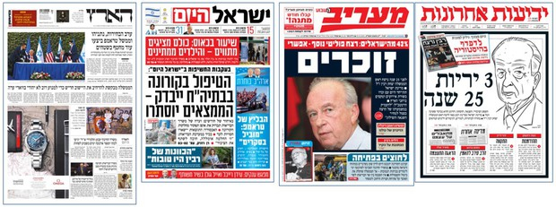

חזרה →
סדר יום (Agenda Setting)
על מה הציבור חושב?
לשימוש בכיתה
גרסת RanLMS — שיעור אינטראקטיבי
אותו מושג, כשיעור שהתלמידים עוברים בעצמם.
שבעה שלבים — שלב אחד על המסך בכל פעם
בדיקת הבנה בסוף כל שלב; טעות מחזירה לתיאוריה עם מרקר קצב קריאה
סימולטור "אתם העורכים" — בוחרים פתיחת מהדורה ורואים את שלושת סדרי היום זזים
ההגשה מגיעה למסך הבדיקה, ולידה כמה ניסיונות היו לתלמיד בכל שלב
פתיחת השיעור ←
נפתח בתצוגת מורה, בלי זיהוי ובלי הגשה.
לשליחה לכיתה — צרו קישור עם קוד הכיתה בסביבת המורה.
touch_app מושגי מפתח מהאגרון (גע במושג לפירוש)
view_agenda קביעת סדר יום
groups סדר יום ציבורי
tv סדר יום תקשורתי
campaign סדר יום פוליטי
sync_alt יחסי גומלין
psychology הגדרה
lightbulb על מה הציבור יחשוב?גישת סדר היום עוסקת בתפקיד של התקשורת בעיצוב סדר היום – התפקיד של התקשורת בהעלאת נושאים לדיון ציבורי.
הנחת היסוד: לתקשורת יש מקום בקביעת השאלה "על מה הציבור יחשוב", על אילו נושאים/אנשים הציבור ידבר.
מה שמופיע בתקשורת נתפש על ידי האזרחים כחשוב יותר.
מה שמופיע באופן בולט בתקשורת (כותרת ראשית, פוסט ויראלי) נתפש כחשוב יותר מנושאים מוצנעים.
compare_arrows המאבק על התודעה
layers שלושה סדרי יום "נאבקים" ביניהם
סדר יום ציבורי: על מה הציבור מדבר? מה חשוב לאזרחים?סדר יום פוליטי: על מה הפוליטיקאים מדברים? מה הם רוצים לקדם?סדר יום תקשורתי: על מה מדברים בתקשורת? מה העורכים מחליטים לסקר?
לכל אחד מהשחקנים יש אינטרס לעצב את סדר היום הציבורי. יש תחרות ומאבק מתמיד ביניהם.
hub דינמיקה
sync הגורמים המשפיעיםהתרשים (למטה) מתאר את הגורמים המשפיעים על עיצוב סדר היום הציבורי.
כל אחד משלוש הגורמים (תקשורת, פוליטיקה, ציבור) משפיע על שאר הגורמים ומושפע מהם.
link דוגמה מהשטח
שומרים על העובדות - דאטה ג'ורנליזם

לכתבה המלאה →
public העידן החדש
smartphone סדר יום בעידן הדיגיטליגלובליזציה: האם נושאים גלובליים דוחקים נושאים מקומיים? האם אנחנו מושפעים מסדר יום עולמי?
רשתות חברתיות: האלגוריתם מתאים לכל אחד "פיד" אישי. האם בעידן הדיגיטלי כבר לא ניתן לדבר על סדר יום ציבורי לאומי אחיד? האם לכל קבוצה יש סדר יום משלה ("בועות פילטר")?
לגרסת RanLMS האינטראקטיבית ←
חזרה →
רני בן זאב